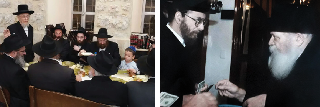

בצער רב התקבלה הידיעה על פטירתו של הגאון החסיד הרב זאב דב סלונים ז”ל חבר בית דין
בצער רב התקבלה הידיעה על פטירתו של הגאון החסיד הרב זאב דב סלונים ז”ל חבר בית דין רבני חב”ד בארה”ק ורב מרכז העיר ירושלים * בשיחה בית משיח משרטט קווים לדמותו המיוחדת שהקפידה להישאר הרחק מאור הזרקורים ושילבה גאונות עם דאגה לצרכי הכלל ובית פתוח לכל נדכא ונזקק והכל בהצנע לכת, מאור פנים ולבביות מאירה וכוב
בצער רב התקבלה הידיעה על פטירתו של הגאון החסיד הרב זאב דב סלונים ז”ל חבר בית דין רבני חב”ד בארה”ק ורב מרכז העיר ירושלים * בשיחה בית משיח משרטט קווים לדמותו המיוחדת שהקפידה להישאר הרחק מאור הזרקורים ושילבה גאונות עם דאגה לצרכי הכלל ובית פתוח לכל נדכא ונזקק והכל בהצנע לכת, מאור פנים ולבביות מאירה וכובשת * בשיחה מיוחדת לבית משיח משתפים בני המשפחה באנקדוטות מילדותו בירושלים של מעלה * התינוק שהבטיחה הרבנית מנוחה רחל בחלום, ההסכמה שנתן ראש ישיבת מיר ללימוד התניא, ומדוע התבקש להגיע לחדר בחליפה?
זלמן צרפתי

הרב סלונים היה ידוע בלמדנותו הרבה. מגיל צעיר עסק בתורה בשקדנות. במהלך השנים זכה להוציא לאור מספר ספרים, בהם הספר ‘הליכות עולם’ - דיני ומנהגי חודש אלול, ראש השנה ויום כיפור; שו”ת ‘שערי הלכה’; ו’פרדס הפרשה’ על פרשיות השבוע. אשר חיבר בעקבות הוראה מפורשת שקיבל מהרבי.
בשנת תשל”ט מונה הרב סלונים בברכת הרבי לחבר בבית דין רבני חב”ד באה”ק, במסגרת תפקידו זה פעל רבות למען ביסוס והרחבת מוסדות חב”ד בארץ הקודש, כשהוא מקפיד להישאר הרחק מאור הזרקורים.
אחת מיוזמותיו המפורסמות הייתה הדפסת ספר ה’חת”ת’ המפורסם, המלווה את חסידי חב”ד על כל צעד ושעל. “היה זה בשנת תשמ”א, על מנת לחזק ולהקל על קיום התקנה של הרבי הריי”צ, נתן ה’ בליבי רעיון להדפיס ספר הכולל בכרך אחד את החמשה חומשי תורה, ספר התהילים וספר התניא, וזאת כדי להמריץ ולזרז את לימוד החת”ת. כמובן שבראש ובראשונה שלחתי מכתב לרבי וכתבתי לו על רעיון זה ובטרם כל פעולה המתנתי למענה, הרי ידעתי שהרבי התנגד בעבר לכל שינוי בהדפסת ספר תניא קדישא. ומה רבה הייתה שמחתי כאשר אכן זכיתי והרבי השיב על המכתב וכתב “ונכון הדבר”, באותו הרגע הפרויקט יצא לדרך, וניגשנו להדפיס את החת”ת במתכונתו הנוכחית”. סיפר לימים הרב סלונים.
“היה זה בשנת הסתלקותו של אבי הרב החסיד ר’ יהודה לייב ז”ל והוצאתי את הכרך הזה לעילוי נשמתו. וב”ה זכות גדולה נפלה בחלקי בס”ד שהרעיון התקבל עד מהרה בתוך כלל אנ”ש והפך לחלק בלתי נפרד מכל אחד ואחד ששייך לחב”ד, וכיום בכל בית או רכב של חסיד חב”ד בעולם כולו ניתן למצוא את החת”ת לצד קופת צדקה.
בתפקידו הרשמי כיהן הגאון הרב סלונים כרבה של מרכז העיר ירושלים, תפקיד חשוב ומרכזי בחיים היהודיים של עיר הקודש. מתוקף תפקידו כאחראי על שירותי היהדות במרכז העיר הקדושה והמיוחדת, דאג הרב לצרכי היהדות השוטפים במרכז ירושלים וזאת לצד פעילותו הרבה בענייני חסד ועזרה לזולת. ביתו תמיד היה פתוח לכל נתמך ונזקק והוא קיבל כל אחד בסבר פנים יפות, במאור פנים ובלבביות יתירה.
***
הגאון הרב זאב דב סלונים נולד ביום כ”א בתמוז תרצ”ד, לאחת המשפחות החשובות בחסידות חב”ד. אביו הרב יהודה לייב סלונים ז”ל מצאצאי הרבנית הצדקנית מרת מנוחה רחל סלונים ע”ה ביתו של אדמו”ר האמצעי ונכדתו של אדמו”ר הזקן, ונקרא על שם סבו הגה”ח ר’ זאב דב סלונים, שכיהן כרב קהילת חב”ד בחברון.
במשפחת סלונים עובר סיפור נורא הקשור בלידתו של הרב. מסופר, כי להוריו היה בן בשם צבי הירש ז”ל, שהיה מבורך בכישרונות מיוחדים. לדאבון לב נפטר צבי הירש לאחר מחלה קצרה בהיותו בן 11 בלבד. חכמתו ופיקחותו של הילד היו מפורסמים, ופטירתו בגיל צעיר הכתה את תושבי הישוב הישן בירושלים בתדהמה ובצער עמוק. אך במיוחד השרתה צער עמוק לכל בני המשפחה על פטירת בנם יחידם, וההורים מיאנו להתנחם.
בימי השבעה באה לנחם אחת מבנות משפחת מצאצאי אדמו”ר הזקן, וסיפרה להורים כי ראתה בחלום כמה ימים לפני פטירתו את הסבתא הצדקנית הרבנית מנוחה רחל ע”ה שהוליכה עמה את הילד צבי הירש, והבינה שהסבתא לקחה עמה את הילד, לרמז על פטירתו, היא שאלה אותה בחלום: סבתא לאיפה את לוקחת אותו, השיבה הסבתא כי יבוא ילד אחר אחריו. וכך היה, לאחר שנה נולד הילד זאב דב, לשמחת כולם, והתרפאה כל המשפחה.
כבר בילדותו נודע הרב זאב דב כעילוי מופלג שהתברך בכישרונות נדירים ביותר. כשהיה בן עשר החל ללמוד בתלמוד תורה הירושלמי המפורסם במאה שערים ‘חיי עולם’, שם התקבל לכיתה של תלמידים מבוגרים מגילו לאחר שעמדה הנהלת הת”ת על כשרונותיו המזהירים. כדי שלא יבלוט זאב דב הצעיר בין חבריו המבוגרים ממנו הציעו הנהלת הת”ת שיגיע לחדר בחליפה כדי שיראה מבוגר.
באותה תקופה הגיע מארה”ב הגאון רבי אליעזר סילבר נשיא ועד הישיבות לביקור בארה”ק וערך ביקורים בתלמודי התורה, ישיבות, ומוסדות החינוך בירושלים. הרב סילבר לא נמנה על עדת החסידים, ולכן כאשר הגיע וביקר בת”ת הציגו לו המלמדים את העילוי הצעיר שכונה ‘בערל’ה’ שישמיע לרב סילבר חידושי תורה.
הרב סילבר ביקש לקחת את הילד ברכבו, וזאב דב בן ה–11 התלווה אל הגאון בביקוריו במוסדות. בעת נסיעתו חזר הילד לרב סילבר חידושי תורה ופלפול במסכת גיטין שלמד בת”ת. והוא לא גמר להתפעל ולהתרשם מהיקף ידיעותיו של הילד הצעיר. הרב משה פרוש שליוה את הרב סילבר בביקורים במוסדות, סיפר לימים כי בתום הביקורים אמר לו הרב סילבר “לא ידעתי שגם לחסידים יש ילדים גאונים”… כשנפרד הילד מהרב סילבר נתן לילד שטר כסף נכבד באותם ימים, לשאלת הילד על כך, השיב הגאון “מגיע לך שהרי לימדת אותי חידושי תורה”.
אגב, שכששב הילד הצעיר שב לביתו, לא סיפר זאת להוריו כלל וכלל. וזה נודע להם רק לאחר שהסיפור הפך לשיחת היום בירושלים.
לאחר הבר מצווה החל ללמוד בישיבה קטנה תורת אמת. שם המשיך להתעלות בנגלה ובחסידות תחת הדרכתם והשפעתם של רבני הישיבה וזקני משפיעי חב”ד בירושלים. כשהחל המצב הביטחוני להידרדר ומנע את האפשרות להמשיך ללמוד בישיבה כרגיל, בהתייעצות עם הרב זוין והמשפיע הרב שלמה חיים קסלמן, הוחלט שיעבור ללמוד בישיבת מיר, שם למדו בחורים רבים מבתים חסידיים.
הרב סלונים היה באותם ימים בחור בן 16 כשבא עם אביו אל ראש ישיבת מיר הרב פינקל ז”ל, שהיה זקן ראשי ישיבות, לשאלת ראש הישיבה את גילו, אמר לו את האמת שהוא רק בן 16, אמר ראש הישיבה כי בישיבה שלו לומדים תלמידים מבוגרים ממנו בהרבה, וצעיר כמוהו אין בכלל, ועל כן הוא נאלץ להשיב את פניו ריקם. הם עזבו את החדר כלעומת שבאו.
באותה העת ישב אצל הרב פינקל אברך ששמע על כישרונותיו של הרב סלונים, ואמר לראש הישיבה כי זה העילוי הנודע שכולם מדברים אודותיו. מיד הורה לקרוא לאב ולבן חזרה לחדרו, ואמר שמסכים לקבלו לישיבה. כיון שניכר היה עליהם כי הינם חסידי חב”ד, אמר לו הרב פינקל “דע לך כי כאן בישיבה יש כל יום סדר לימוד בספרי המוסר”. הנער זאב דב השיב לראש הישיבה ואמר שהוא ילמד באותו זמן את ספר התניא של זקנו הקדוש. הסכים הרב פינקל ואמר, “הרי בספר תניא מובא עניני מוסר”. והשיב מיד הבחור הצעיר “בתניא יש עניני מוסר בתוספת הביאור של חסידות”, הגר”י פינקל חייך והסכים על זה. הרב סלונים נכנס לספריית הישיבה ומצא שם להפתעתו מהדורה ראשונה של ספר התניא. וכך מידי ערב בזמן שלמדו בישיבה סדר מוסר, ישב הרב סלונים עם אברך מחסידי גור שלמד במיר, ולמדו את ספר התניא.
לאחר נישואיו עם זוגתו הרבנית שעמדה לימינו כל הימים מרת גיטל–לאה ע”ה, בתו של הרב ישראל פלדמן ז”ל, המשיך ללמוד ולשקוד על תלמודו, הוא השלים עצמו בלימודי ההוראה וקיבל סמיכה כדת וכדין מגדולי ירושלים, ובהמשך נבחר לכהן כרב מרכז ירושלים.
הרב סלונים זכה לקרובים רבים ולמענות מהרבי. בשנת תשכ”ג נסע לראשונה לחצר הקודש בקראון הייטס. לימים סיפר על כך הרב סלונים: “ביחידות הראשונה אצל הרבי, הרבי אמר לי: אתה נחבא אל הכלים, צא מהכלים. לשאלתי לכוונת הרבי בזה, אמר לי הרבי, ‘כבר מחר תדבר עם כל התמימים מתלמידי הישיבה בענייני הלימוד שלומדים, וגם תדבר בכל הכינוסים’.
“הייתי באותם ימים אברך צעיר לאחר נישואי ולא ירדתי לסוף דעתו הק’, הייתי אורח נוטה ללון בקראון הייטס, ולפי הוראת הרבי הייתי צריך מיד למחרת היום לקיים ההוראה ולדבר עם תלמידים בלימוד, כאשר הלימודים בישיבה הגדולה היו בעניינים שונים בהם עסקו התלמידים במסגרת לימודם בישיבה, ולא בנושאים בהם עסקתי דווקא.
“מה שהדהים אותי ביותר היה שדקות אחדות לאחר שיצאתי מהקודש פנימה, כבר ידע ראש הישיבה בקראון הייטס הרב מענטליק, את דברי הרבי ביחידות אלי. איני יודע מי שאמר לו זאת, חברי המזכירות או ששמע על כך מאחרים. ומיד מצא אותי ואמר לי שאני מוכרח מיד לקיים הוראת הרבי. ואכן למחרת היום הכין לי הרב מענטליק חדר מיוחד בסמוך לישיבה, והכניס בכל פעם שלשה תלמידים שאשוחח עמם בסוגיות בהם הם עוסקים ואבחן אותם על לימודם. כך שבמשך מספר ימים נכנסו כל תלמידי הישיבה, ועמדתי מקרוב על ידיעותיהם. מסרתי להרב מענטליק רשימה וחוות דעת על כל אחד ואחד מהתלמידים, כשחזרתי לארץ ישראל כבר הגיע אלי מכתב מהרב מענטליק ששלח את הדו”ח הנ”ל אל הרבי וכתב את ברכתו ועידודו על כך”.
תפקיד נוסף אותו מילא הרב סלונים בנאמנות, במקביל לתפקידו כרב, היה משפיע בבית כנסת חב”ד ‘אהל יצחק’ ברחוב בעל התניא בירושלים. הרב סלונים סיפר על זכות נוספת שנפלה בחלקו לגרום נחת רוח לזקנו אדמו”ר הזקן במסגרת תפקידו כמשפיע. היה זה באחת השנים בהתוועדות ביום ההילולא קדישא בכ”ד טבת, שנערך ב’בעל התניא שול’ במאה שערים, והוא עדיין בחור צעיר, הציע לערוך בכל כ”ד טבת סיום על שו”ע הרב ולחלק לימוד זה בין המשתתפים בהתוועדות. הצעה זו נתקבלה בהתעוררות בקרב אנ”ש, ואכן מדי שנה בשנה נערך בביהמ”ד בכ”ד טבת סיום וחלוקת שו”ע הרב. שנה לאחר מכן, בכ”ד טבת תשכ”ג אמר הרבי שיחה על סיום והתחלת שו”ע הרב.
בתקופה האחרונה הלך ונחלש, ובשבועות האחרונים חלה ומצבו הלך והידרדר. ביום שני בבוקר לפרשת שמות, השיב הרב סלונים את נשמתו המזוככת לבוראו ויוצרו, למגינת לב המוני תלמידיו ומכריו הרבים בירושלים ומחוצה לה שקיבלו בכאב וביגון את הידיעה המרה על פטירתו.
קהל רב השתתף במסע הלוויה שיצאה מביתו ברח’ הנביאים ועברה דרך ביהכנ”ס ‘נחלת שבעה’ וביהכנ”ס חב”ד בשכונת מאה שערים, בהם כיהן כרב עשרות רבות בשנים והשמיע שיעורי תורה וחסידות, בדרכה לחלקת חב”ד בהר הזיתים, שם ניטמן.
הותיר אחריו דורות ישרים מבורכים לתפארת, כאשר בניו, נכדיו וניניו משמשים כשלוחי הרבי מלך המשיח ברחבי תבל. בניו: הרב אהרן שליח הרבי בבינגהמטון, ניו יורק; הרב ברוך שליח הרבי במודיעין; הרב שניאור–זלמן, שליח הרבי בס. פאולו, ברזיל; הרב יוסף–יצחק משלוחי הרבי בירושלים; הרב צבי שליח הרבי במצפה רמון; הרב יעקב משלוחי הרבי בירושלים; וחתנו הרב מנחם–מענדל אזדאבא, שליח הרבי בעיר העתיקה בירושלים.